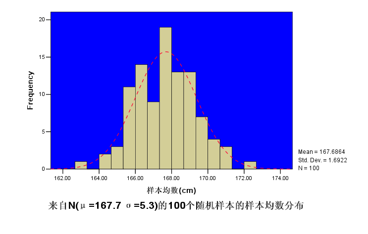
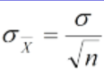
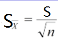
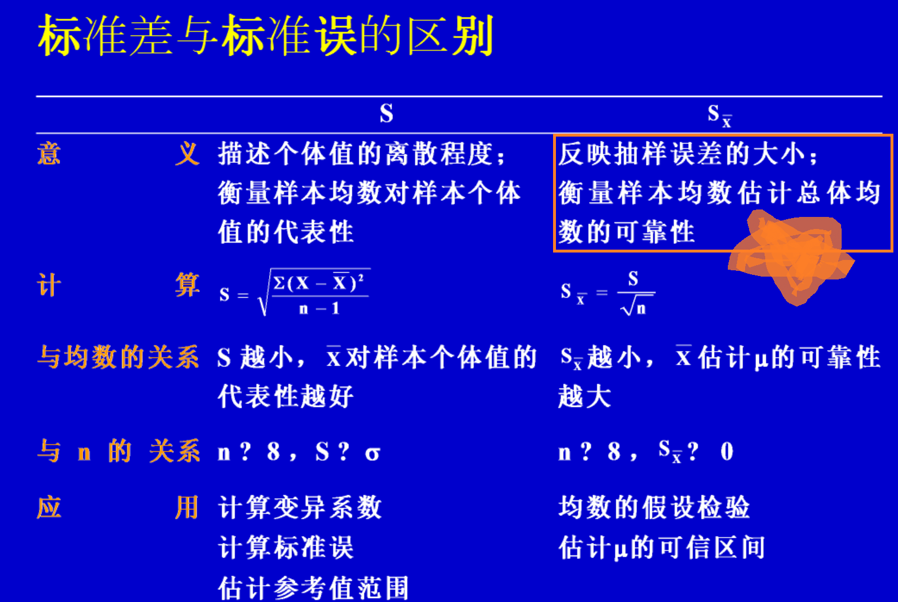
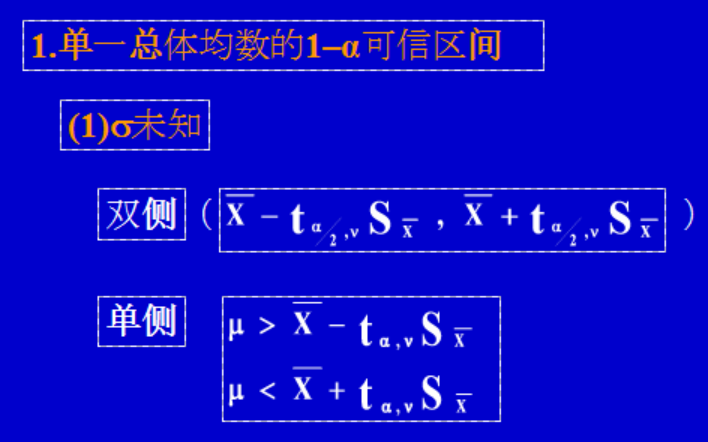
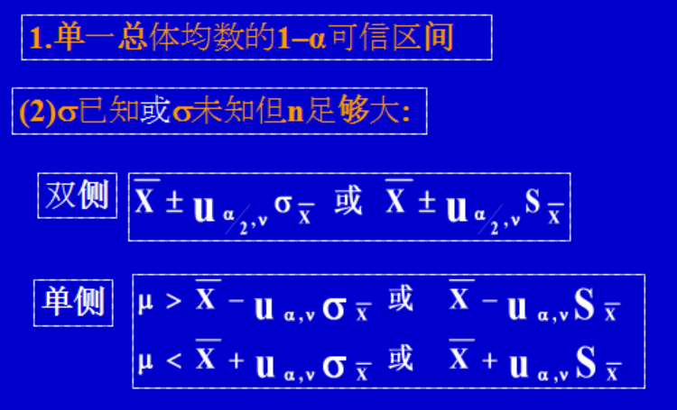
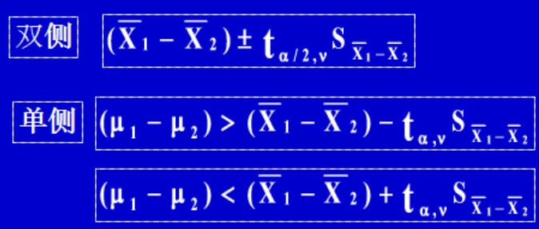
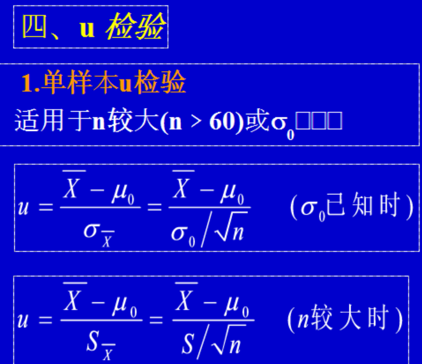
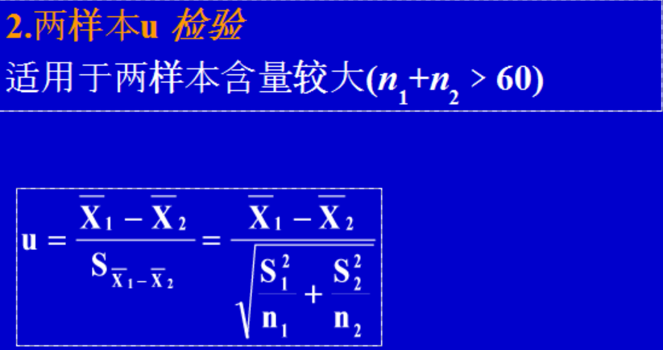
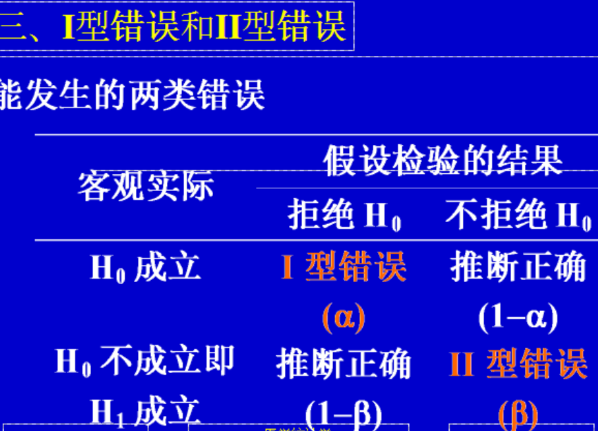

与假设检验
均数的抽样误差与标准误
t 分布
总体均数的估计
假设检验的基本原理和步骤
t 检验
假设检验的注意事项
正态性检验和两样本方差比较的F检验（一笔带过）
抽样误差、可信区间的概念及计算，I、II类错误
了解内容 1. t分布的图形与特征； 2. 总体方差不等时的两样本均数的比较； 3. 两样本方差齐性检验。
如对一批罐头质量检查,限于人力、财力、物力、时间或个体过多等原因，不可能也没必要对所有个体逐一研究,因此提出了用合理抽取的样本特征代表整体参数的思想。
因为抽样不可能100%反映总体情况，因此出现了抽样误差的概念。
抽样误差是不可避免的。
抽样误差是有规律的。
基于抽样的样本的特征我们可以提出样本均数的t分布。样本的特征有：

上图是抽样的各个均数组成的条形图，符合类似正态分布的特征。
来自概率论的降维帮助：以下我也不会证明，只要求懂得用就好。 1. 从正态总体中抽样，抽取样本含量为n的样本，样本均数x拔服从正态分布。即使是从偏态总体中抽样，在样本含量足够(n>60)大时,x拔也近似正态分布。
2.从均数为μ，标准差为小sigma的正态或偏态总体中抽样样本例数为n的样本，新样本组成的数据中，样本均数为μ，
公式：样本均数的标准差sigma=原sigma/√n

上面新样本的标准差命名为标准误，SE。可以归纳其意义：描述抽样误差的大小, SE越小, 说明抽样误差越小，样本均数越接近总体均数，用该组样本平均值x拔代表μ的可靠性越高。
样本均数的标准差称均数的标准误，SEM.由SEM是原sigma变换过来（见公式），
说明在同一总体中随机抽样，抽到样本含量越大，均数的标准误越小。均数的标准误反映了样本均数间的离散程度，也反映了样本均数与总体均数的差异。据此，得出推论：增加样本含量是减少抽样误差的有效途径。
实际中，总体标准差往往未知，因而通常用样本标准差代替，求得样本均数标准误的估计值，计算公式为：

例题很好，在某地随机抽查成年男子140人，得红细胞均数4.77(*1012/L)，标准差S=0.38，试计算样本均数的标准误

=0.38/√140
=0.0032（*1012/L）

t分布与自由度有关，以0为中心，左右对称，μ->∞是，t分布逼近u分布。
单尾/双尾概率的应用，同正态分布的时候，只是数值查表得。其具有特殊的同样的t值，对应双尾的α水准=为单尾的α水准的2倍
引入作为没学过的参数估计方法——可信区间——的特征，其克服了另一种参数估计的弊病（未考虑抽样误差大小），采用区间估计这一先进的思想，按预先给定的概率(1-α)，估计一个包含总体参数的范围。该范围称为参数的可信区间(confidence interval, CI)。
但是我们还是要先算一手CI，有限制的，
算单一总体均数的可信区间时
(1)总体的方差未知
按t分布原理计算。方程基本上是相同的，只是t值需要查表。

(2)总体的方差已知或总体的方差未知但n>60
按u分布原理,就是
均数±1.96标准误 α=0.05


若选择题会说，那意义就是在实际工作中，只能根据一次试验结果计算一个可信区间，就认为该区间包含了相应总体参数，该结论犯错误的概率≤α。
可信区间一旦形成，它要么包含总体参数，要么不包含总体参数，二者必居其一，无概率可言。可信度是事前概率。
若只顾提高可信度(α），则可信区间会变宽（不精确）。
可信区间用于估计总体参数，总体参数只有一个。参考值范围用于估计个体值的分布范围，个体值有很多。
95%可信区间中的95%是可信度，即所求可信区间包含总体参数的可信程度为95%。上一节中我们计算了很相似的概念，95%参考值范围——中的95%是一个比例，即所求参考值范围包含了95%的正常人。
小概率事件原理 小概率事件(P≤0.05)在一次抽样中发生的可能性很小，如果它发生了，则有理由怀疑H0的正确性，认为H1成立，该结论可能犯≤5%的错误。
针对总体而不是针对样本而言 H0：某两个总体参数相等，仅一种情况 H1： 某两个总体参数不等，有多种情况 H0与H1的内容不能互换，否则无法决定拒绝多种情况中的哪一种情况 检验水准α：预先规定的拒绝假设H0时的最大允许误差，它确定了小概率事件标准。在实际工作中常取0.05，但并非一成不变。检验统计量大小反映样本与总体的偏离程度（如t值反映样本均数与总体均数的偏离程度，以标准误进行标准化）
建立假设，确定检验水准 H0：（无效假设）μ=μ0 H1：（备择假设）μ>μ0 检验水准的意义及确定 α=0.05
选定检验方法，计算检验统计量
确定P值，作出推断结论
根据专业知识
事先不知道会出现什么结果->双侧
事先知道只能出现某种结果->单侧
问题的提法:有无差别->双侧;是否高（低）->单侧
求出由抽样误差造成此差异的可能性(概率P)有多大 ！若 P 较大(P＞0.05)，认为是由于抽样误差造成的。原因（1），实际上μ=μ0;若 P 较小(P≤0.05)，认为不是由于抽样误差造成的。原因（2），实际上 μ≠μ0
P＞0.05，按α=0.05检验水准，不拒绝H0，差异无统计学意义(差异无显著性)，还不能认为……不同或不等。
P≤0.05 ，按α=0.05检验水准，拒绝H0，接受H1，差异有统计学意义(差异有显著性) ，可以认为……不同或不等，判断谁高谁低。
P≤0.01，按α=0.05检验水准，拒绝H0，接受H1，差异有高度统计学意义(差异有高度显著性) ，可以认为……不同或不等，判断谁高谁低。
算数就行
两同质受试对象分别接受两种不同处理
同一受试对象分别接受两种不同处理
前后测量设计,同一受试对象分别前后接受一种处理



拒绝H0，只可能犯I型错误，不可能犯II型错误；不拒绝H0，只可能犯II型错误，不可能犯I型错误。
样本均数的标准误越小说明
A 观察个体的变异越小
B 观察个体的变异越大
C 抽样误差越大
D 由样本均数估计总体均数的可靠性越小
E 由样本均数估计总体均数的可靠性越大
抽样误差产生的原因是
A 样本不是随机抽取
B 测量不准确
C 资料不是正态分布
D 个体变异
E 统计指标选择不当
要减少抽样误差,通常的做法是
A 减少系统误差
B 将个体变异控制在一定范围内
C 减小标准差
D 控制偏倚
E 适当增加样本含量
对于正偏态分布的的总体,当样本含量足够大时,样本均数的分布近似为
A 正偏态分布
B 负偏态分布
C 正态分布
D t分布
E 标准正态分布
某地抽取正常成年人200名, 测得其血清胆固醇的均数为3.64mmol/L, 标准差为1.20mmol/L, 则该地正常成年人血清胆固醇均数的95%可信区间是
假设检验的目的是
A 检验参数估计的准确度
B 检验样本统计量是否不同
C 检验样本统计量与总体参数是否不同
D 检验总体参数是否不同
E 检验样本的P值是否为小概率
假设检验差别有统计学意义时, P值越小, 说明：
两样本均数比较，检验结果P>0.05说明
A 两总体均数的差别较小
B 两总体均数的差别较大
C 支持两总体无差别的结论
D 不支持两总体有差别的结论
E 可以确认两总体无差别
由两样本均数的差别推断两总体均数的差别，其差别有统计学意义是指
A 两样本均数的差别具有实际意义
B 两总体均数的差别具有实际意义
C 两样本和两总体均数的差别都具有实际意义
D 有理由认为两样本均数有差别
E 有理由认为两总体均数有差别
两样本均数比较,差别具有统计学意义时, P值越小说明
A 两样本均数差别越大
B 两总体均数差别越大
C 越有理由认为两样本均数不同
D 越有理由认为两总体均数不同
E 越有理由认为两样本均数相同
假设检验中的Ⅱ类错误指的是
A 可能出现的误判错误
B 可能出现的假阳性错误
C 可能出现的假阴性错误
D 可能出现的无效假设错误
E 可能出现的备择假设错误
减少假设检验的Ⅱ类错误，应该使用的方法是
A 减少Ⅰ类错误
B 减少测量的系统误差
C 减少测量的随机误差
D 提高检验界值
E 增加样本含量
以下不能用配对检验方法的是
A 比较15名肝癌患者癌组织和癌旁组织中的Sirt1基因的表达量
B 比较两种检测方法测量15名肝癌患者组织中Sirt1基因的表达量
C 比较早期和晚期肝癌患者各15例癌组织中的Sirt1基因的表达量
D 比较糖尿病患者经某种药物治疗前后糖化血红蛋白的变化
E 比较15名受试者针刺檀中穴前后的痛阈值
两独立样本均数t检验,其前提条件是
A 两总体均数相等
B 两总体均数不等
C 两总体方差相等
D 两总体方差不等
E 两总体均数和两总体方差都相等
若将配对设计的数据进行两独立样本均数t检验,容易出现的问题是
A 增加出现I类错误的概率
B 增加出现II类错误的概率
C 检验结果的P值不准
D 方差齐性检验的结果不准
E 不满足t检验的应用条件
两组定量资料比较,当方差不齐时, 应该使用的检验方法是
A 配对t检验
B t′检验
C 两独立样本均数t检验
D 方差齐性检验
E z检验
一些废话：
要有严密的研究设计组间应均衡，具有可比性，除对比的主要因素(如临床试验用新药和对照药)外，其它可能影响结果的因素(如年龄、性别、病程、病情轻重等)在对比组间应相同或相近。
不同资料应选用不同检验方法
确理解“significance”一词的含义过去称差别有或无“显著性”，易造成两样本统计量之间比较相差很大的误解。现在称差别有或无“统计学意义”，相应推断为：可以认为或还不能认为两个或多个总体参数有差别。
结论不能绝对化，因统计结论具有概率性质，故“肯定”、“一定”、“必定”等词不要使用。在报告结论时，最好列出检验统计量的P值，尽量写出具体P值，而不简单写成P﹤0.05，以便读者与同类研究进行比较或进行循证医学时采用Meta分析。
统计“有意义”与医学“有意义”，统计“有意义”对应统计结论，医学“有意义”对应专业结论。统计结论有意义，专业结论无意义，最终结论没有意义，样本含量过大或设计存在问题。统计结论无意义，专业结论有意义，检查设计是否合理、样本含量是否足够。
可信区间说明量的大小即推断总体均数所在范围，假设检验推断质的不同即判断两总体均数是否不等。可信区间不但能回答差别有无统计学意义，还能提示差别有无实际专业意义。可信区间不能够完全代替假设检验。可信区间只能在预先规定概率α<0.05的前提下进行计算，而假设检验能获得一较为确切的P值。